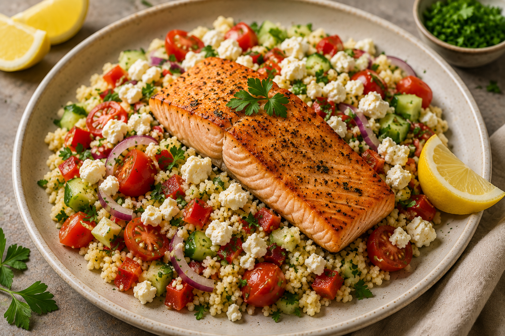

Lax med couscous och fetaost

En enkel och fräsch vardagsrätt med stekt lax, fluffig couscous, krispiga grönsaker och krämig fetaost. En snabb middag med mycket smak och få moment.
Förberedelse: 10 minuter | Tillagning: 15 minuter | Total tid: 25 minuter | Svårighetsgrad: Enkel | 4 portioner
Näringsvärde per portion: 590 kcal | Protein: 36 g
Ingredienser
- 500 g laxfilé
- 3 dl couscous
- 1 st paprika
- 1 st rödlök
- 150 g körsbärstomater
- 100 g fetaost
- 1 msk olivolja
- 1 st citron
- 1 tsk torkad oregano
- Salt och svartpeppar efter smak
Till servering
- Färsk persilja
- Citronklyftor
Instruktioner
- Förbered couscousen enligt anvisningen på förpackningen och låt den stå under lock.
- Skär laxen i portionsbitar och krydda med oregano, salt och svartpeppar.
- Hetta upp olivoljan i en stekpanna och stek laxen på medelhög värme i några minuter på varje sida tills den är genomstekt.
- Skär paprika, rödlök och körsbärstomater i mindre bitar.
- Ta upp laxen ur pannan och stek grönsakerna i samma panna i några minuter tills de mjuknat något.
- Fluffa couscousen med en gaffel och blanda ner de stekta grönsakerna.
- Pressa över lite citron och smaka av med salt och svartpeppar.
- Lägg upp couscousen på tallrikar och toppa med lax och smulad fetaost.
- Servera med färsk persilja och citronklyftor.